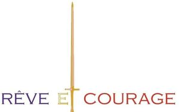

Trade Mark Journal No.2025/024 13 June 2025
WO0000001841990 (3,35)
Office of origin: European Union Intellectual Property Office (EUIPO)
Date of International Registration:22 November 2024
Date of designation in the UK:
22 November 2024

The mark contains the colours blue, gold and red.
International priority date claimed: 27 May 2024
(European Union Intellectual Property Office (EUIPO))
(019032447)
- Class 3
- Soap; perfumes; essential oils; cosmetics; hair care preparations; dentifrices; cosmetic creams and lotions; gels for cosmetic purposes; balms, other than for medical purposes; bath salts, not for medical purposes; body deodorants.
- Class 35
- Retail services relating to soap; retail services relating to perfumes; retail services relating to essential oils; retail services relating to cosmetics; retail services relating to hair care preparations; retail services relating to dentifrices; retail services relating to cosmetic creams and lotions; retail services relating to gels for cosmetic purposes; retail services relating to balms, other than for medical purposes; retail services relating to bath salts, not for medical purposes; retail services relating to body deodorants; retail services relating to candles; retail services relating to perfumed candles; retail services relating to clothing; retail services relating to bath robes; retail services relating to dressing gowns; retail services relating to bathing suits; retail services relating to belts [clothing]; retail services relating to neckties; retail services relating to neckerchiefs; retail services relating to gloves [clothing]; retail services relating to underwear; retail services relating to pyjamas; retail services relating to nightgowns; retail services relating to stockings; retail services relating to tights; retail services relating to shawls; retail services relating to scarves; retail services relating to footwear; retail services relating to headwear; online retail services relating to soap; online retail services relating to perfumes; online retail services relating to essential oils; online retail services relating to cosmetics; online retail services relating to hair care preparations; online retail services relating to dentifrices; online retail services relating to cosmetic creams and lotions; online retail services relating to gels for cosmetic purposes; online retail services relating to balms, other than for medical purposes; online retail services relating to bath salts, not for medical purposes; online retail services relating to body deodorants; online retail services relating to candles; online retail services relating to perfumed candles; online retail services relating to clothing; online retail services relating to bath robes; online retail services relating to dressing gowns; online retail services relating to bathing suits; online retail services relating to belts [clothing]; online retail services relating to neckties; online retail services relating to neckerchiefs; online retail services relating to gloves [clothing]; online retail services relating to underwear; online retail services relating to pyjamas; online retail services relating to nightgowns; online retail services relating to stockings; online retail services relating to tights; online retail services relating to shawls; online retail services relating to scarves; online retail services relating to footwear; online retail services relating to headwear.
Geraldina Polverelli
Representative: Haseltine Lake Kempner LLP, One Portwall Square, Portwall Lane Bristol BS1 6BH UNITED KINGDOM